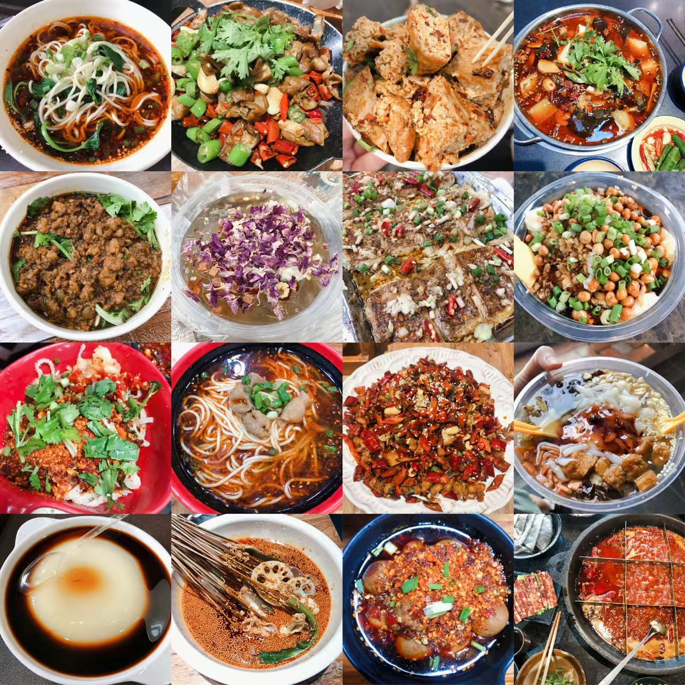

家乡成都的美食记忆
成都是一座被美食环绕的城市，每一道小吃都承载着我的成长故事。从小学门口的糖油果子到家庭聚餐的火锅，这些味道早已融入我的生活。
我的最爱美食分类
麻辣火锅
家庭聚餐的必备项目，最喜欢和父母在春熙路的老火锅店享用
记忆点：16岁生日时，一家人在火锅店庆祝的温暖场景

担担面
初中时每天早餐的选择，成都七中门口的面馆是我的"食堂"
记忆点：中考前，老板特意为我多加了一勺花生碎加油打气

糖油果子
兴隆小学门口的经典小吃，放学后必买的"快乐源泉"
记忆点：用零花钱买糖油果子时，不小心把糖汁沾到校服上

钟水饺
爷爷最爱的小吃，周末常带我去文殊院附近的老店品尝
记忆点：爷爷教我蘸醋的正确方法，说这样才能吃出鲜味
家庭常去餐厅推荐
| 餐厅名称 | 地址 | 推荐菜品 | 记忆故事 |
|---|---|---|---|
| 蜀九香火锅 | 锦江区东大街 | 麻辣牛肉、毛肚 | 每年春节 family dinner 的固定地点 |
| 贺记蛋烘糕 | 青羊区文庙西街 | 奶油肉松蛋烘糕 | 高中时和朋友翘课去买的"秘密基地" |
| 明婷饭店 | 金牛区星辉西路 | 脑花豆腐、荷叶排骨 | 考上大学后，父母带我去庆祝的第一家餐厅 |